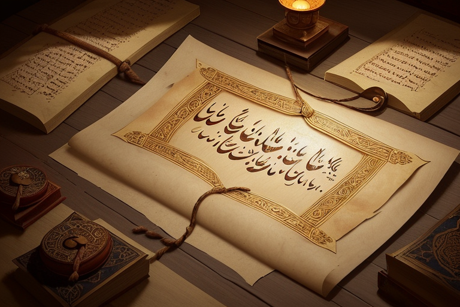

Dinasti Umayyah: Masa Keemasan dan Eksansi Kekuasaan

Dinasti Umayyah, yang berdiri pada awal abad ke-7 Masehi, menjadi
salah satu periode kritis dalam sejarah Islam. Dinasti ini
mencatat sejarah pemerintahan Islam setelah periode Khulafaur
Rasyidin dan memainkan peran sentral dalam pengembangan
kekhalifahan. Dengan pendiriannya oleh Muawiyah ibn Abi Sufyan
pada tahun 661 M, Dinasti Umayyah mencapai masa keemasan yang
menandai transformasi besar-besaran dalam politik, budaya, dan
ekonomi Islam.
Muawiyah ibn Abi Sufyan, seorang sahabat Nabi dan gubernur wilayah Suriah, menjadi khalifah pertama Dinasti Umayyah setelah Perang Saudara Islam yang melibatkan Ali ibn Abi Thalib. Meskipun penunjukan Muawiyah sebagai khalifah tidak selalu diterima oleh semua pihak, keberhasilannya dalam mengkonsolidasikan kekuasaan membuka jalan bagi masa keemasan Dinasti Umayyah.
Periode keemasan Dinasti Umayyah terjadi di bawah kepemimpinan Abdul Malik ibn Marwan (685-705 M). Selama masa pemerintahannya, ibukota kekhalifahan dipindahkan dari Madinah ke Damaskus, sebuah langkah yang memberikan sentralitas geografis yang lebih strategis. Pemindahan ibukota juga mencerminkan pergeseran pusat kekuatan dalam dunia Islam. Abdul Malik juga dikenal sebagai pemimpin yang memperkenalkan mata uang koin Islam pertama, yaitu Dinar dan Dirham, yang menjadi lambang stabilitas ekonomi.
Dinasti Umayyah memperluas wilayah kekhalifahan melalui serangkaian kampanye militer yang sukses. Pada masa kepemimpinan Abdul Malik dan Khalifah Al-Walid I, wilayah kekhalifahan mencakup sebagian besar Timur Tengah, Afrika Utara, Spanyol, dan sebagian Asia Tengah. Eksansi ini tidak hanya memperluas wilayah politik tetapi juga membawa penyebaran Islam, perdagangan, dan pertukaran budaya yang luas.
Selama masa Dinasti Umayyah, terjadi kemajuan signifikan dalam seni, arsitektur, dan ilmu pengetahuan Islam. Abdul Malik memimpin pembangunan monumental, termasuk Masjidil Haram di Makkah dan Masjidil Aqsa di Yerusalem. Seni kaligrafi dan ukiran, yang mencerminkan keindahan dan kompleksitas Islam, juga berkembang pesat. Selain itu, pusat-pusat ilmu pengetahuan seperti Bait al-Hikmah di Damaskus menjadi fokus utama bagi perkembangan ilmu pengetahuan.
Meskipun Dinasti Umayyah mencapai keberhasilan besar dalam berbagai bidang, mereka juga menghadapi tantangan internal. Kelompok oposisi, terutama kelompok yang menginginkan kembali sistem khilafah yang demokratis, menentang pemerintahan otoriter Umayyah. Konflik ini, bersama dengan ketidaksetaraan sosial, menciptakan tekanan dalam masyarakat.
Pada tahun 750 M, Dinasti Umayyah mengalami akhir yang dramatis. Abbasiyah, kelompok yang menentang Dinasti Umayyah, berhasil merebut kekuasaan dan mendirikan Dinasti Abbasiyah. Pembantaian besar-besaran terhadap anggota Dinasti Umayyah terjadi, yang dikenal sebagai Pembantaian Malam Tahun Baru, menandai akhir dari kekuasaan Umayyah. Meskipun Dinasti Umayyah berakhir secara politik, warisan mereka terus hidup dalam perkembangan sejarah dan budaya Islam. Periode keemasan dan eksansi kekuasaan Umayyah menciptakan fondasi bagi perkembangan peradaban Islam selanjutnya, sambil memberikan pelajaran berharga tentang kekuatan dan kerentanan kekhalifahan.
Pendiri dan Pemimpin Awal
Muawiyah ibn Abi Sufyan, seorang sahabat Nabi dan gubernur wilayah Suriah, menjadi khalifah pertama Dinasti Umayyah setelah Perang Saudara Islam yang melibatkan Ali ibn Abi Thalib. Meskipun penunjukan Muawiyah sebagai khalifah tidak selalu diterima oleh semua pihak, keberhasilannya dalam mengkonsolidasikan kekuasaan membuka jalan bagi masa keemasan Dinasti Umayyah.
Masa Keemasan Abdul Malik ibn Marwan
Periode keemasan Dinasti Umayyah terjadi di bawah kepemimpinan Abdul Malik ibn Marwan (685-705 M). Selama masa pemerintahannya, ibukota kekhalifahan dipindahkan dari Madinah ke Damaskus, sebuah langkah yang memberikan sentralitas geografis yang lebih strategis. Pemindahan ibukota juga mencerminkan pergeseran pusat kekuatan dalam dunia Islam. Abdul Malik juga dikenal sebagai pemimpin yang memperkenalkan mata uang koin Islam pertama, yaitu Dinar dan Dirham, yang menjadi lambang stabilitas ekonomi.
Eksansi Kekuasaan
Dinasti Umayyah memperluas wilayah kekhalifahan melalui serangkaian kampanye militer yang sukses. Pada masa kepemimpinan Abdul Malik dan Khalifah Al-Walid I, wilayah kekhalifahan mencakup sebagian besar Timur Tengah, Afrika Utara, Spanyol, dan sebagian Asia Tengah. Eksansi ini tidak hanya memperluas wilayah politik tetapi juga membawa penyebaran Islam, perdagangan, dan pertukaran budaya yang luas.
Kontribusi Budaya dan Pembangunan
Selama masa Dinasti Umayyah, terjadi kemajuan signifikan dalam seni, arsitektur, dan ilmu pengetahuan Islam. Abdul Malik memimpin pembangunan monumental, termasuk Masjidil Haram di Makkah dan Masjidil Aqsa di Yerusalem. Seni kaligrafi dan ukiran, yang mencerminkan keindahan dan kompleksitas Islam, juga berkembang pesat. Selain itu, pusat-pusat ilmu pengetahuan seperti Bait al-Hikmah di Damaskus menjadi fokus utama bagi perkembangan ilmu pengetahuan.
Kehidupan Beragama dan Konflik
Meskipun Dinasti Umayyah mencapai keberhasilan besar dalam berbagai bidang, mereka juga menghadapi tantangan internal. Kelompok oposisi, terutama kelompok yang menginginkan kembali sistem khilafah yang demokratis, menentang pemerintahan otoriter Umayyah. Konflik ini, bersama dengan ketidaksetaraan sosial, menciptakan tekanan dalam masyarakat.
Runtuhnya Dinasti Umayyah
Pada tahun 750 M, Dinasti Umayyah mengalami akhir yang dramatis. Abbasiyah, kelompok yang menentang Dinasti Umayyah, berhasil merebut kekuasaan dan mendirikan Dinasti Abbasiyah. Pembantaian besar-besaran terhadap anggota Dinasti Umayyah terjadi, yang dikenal sebagai Pembantaian Malam Tahun Baru, menandai akhir dari kekuasaan Umayyah. Meskipun Dinasti Umayyah berakhir secara politik, warisan mereka terus hidup dalam perkembangan sejarah dan budaya Islam. Periode keemasan dan eksansi kekuasaan Umayyah menciptakan fondasi bagi perkembangan peradaban Islam selanjutnya, sambil memberikan pelajaran berharga tentang kekuatan dan kerentanan kekhalifahan.